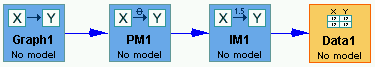

Inside the Data Box |
A Data Box in the main workspace looks like this:

if it's data that's being simulated, or this:
if it's data that was loaded in from an external file.
Most of the time that you interact with the data box, you will be interacting with a Data Set List, which is a list of data sets, one of which (the one you see) is designated as "selected." For most information, see Data Set Lists.